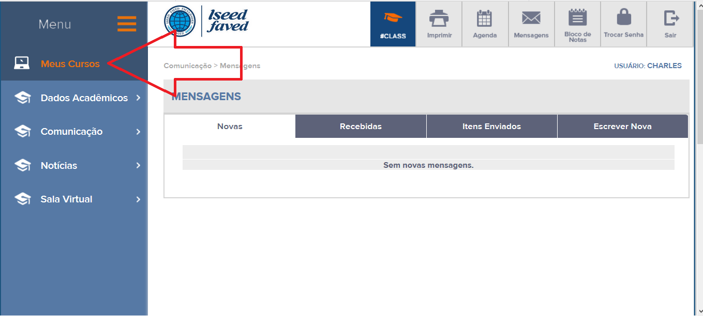
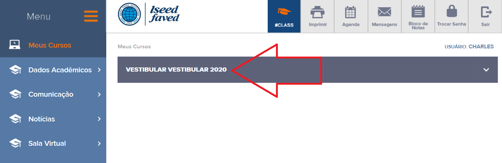
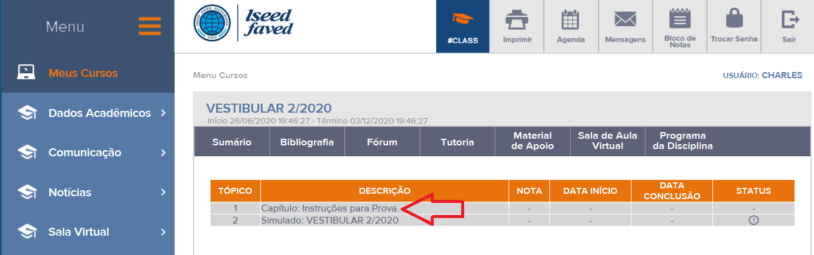

Vestibular Online 01/2022
Considerando o momento atual devido a restrições impostas pela Pandemia de Covid 19, o Iseed Faved Faculdades realizará o Vestibular para ingresso no 1 Semestre de 2022 de forma Online.
O candidato deverá realizar sua inscrição em nosso ambiente virtual.
Escolha o curso pretendido e você será redirecionado para o ambiente de Inscrições: Página de Inscrições
O Vestibular é totalmente gratuito.
Depois do preenchimento do cadastro você receberá por e-mail um USUÁRIO e SENHA para realizar seu vestibular em nosso Ambiente Virtual.
Clique e acesse >> Ambiente Virtual
Você será solicitado a alterar sua senha no primeiro acesso, e confirmar sua data de nascimento.
Para Acessar a Prova do Vestibular, click no meu do lado esquerdo ==> MEUS CURSOS
Em seguida aparecerá na aba MEUS CURSOS: VESTIBULAR VESTIBULAR 1/2022, click nesse nome e em seguida Click no Botão ACESSAR MODULO EAD.
Na próxima tela aparecerá os tópicos, click em ==> Capítulo: Instruções para Prova;
Leia atentamente as Instruções e logo após click ==> Próximo e inicie sua Prova.
Importante: A prova deve ser feita no mesmo dia da inscrição. Caso não seja realizada no prazo, favor entrar em contato com a instituição.
Os resultados do exame serão divulgados através do nosso Portal www.iseed-faved.com.br, em um prazo de 2 a 4 dias uteis após a realização da Prova.
Conjuntamente com o resultado, serão divulgadas instruções e condições das matrículas para o 1 Semestre de 2022.